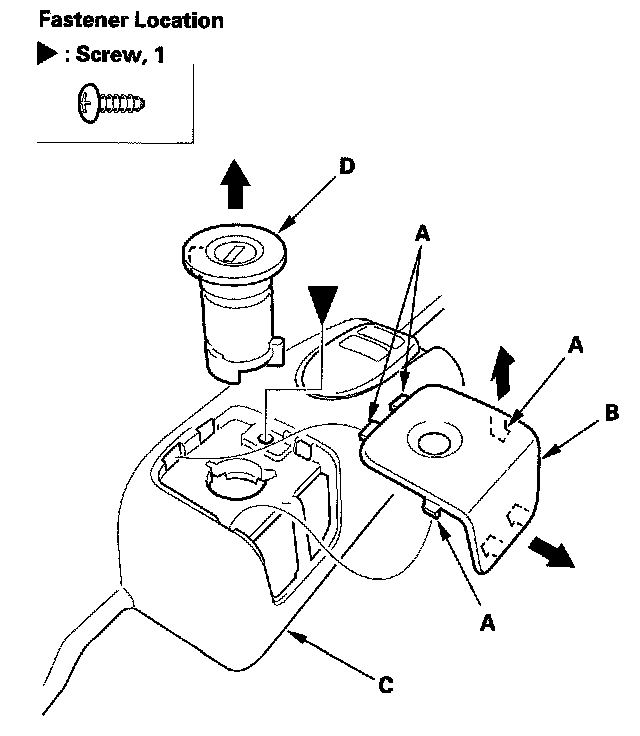
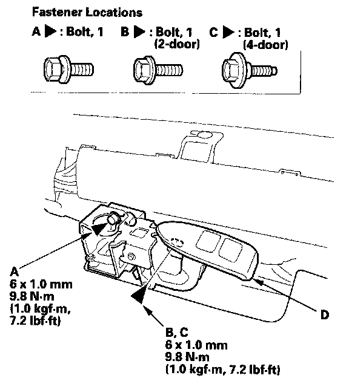
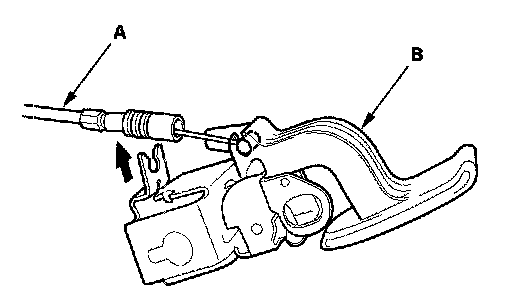

Fuel Door Release Lever: Service and Repair
Trunk Lid Opener/Fuel Fill Door Opener ReplacementSpecial Tools Required
KTC trim tool set SOJATP2014 *
* Available through the American Honda Tool and Equipment Program
NOTE: Use the appropriate tool from the KTC trim tool set to avoid damage when prying components.

1. Using a trim tool, detach the hooks (A) by prying the front side cap (B), then remove it from the front door sill trim (C), and remove the opener lock cylinder (D).
2. Remove the screw.
3. Remove the front door sill trim.

4. Loosen the bolt (A), and remove the bolt (B, C), then remove the trunk lid opener/fuel fill door opener (D).

5. Disconnect the trunk lid opener/fuel fill door opener cable (A), then remove the opener (B). Take care not to kink the cable.
6. lnstall the opener in the reverse order of removal, and note these items:
- Make sure the opener cable is connected properly.
- Make sure the trunk lid and fuel fill door open properly and lock securely.
- Fix at the original position in the outer end of cable on the trunk lid opener/fuel fill door opener securely. And check the trunk lid latch operation:
Make sure trunk lid latch, and fuel fill door latch unlock when pulling, and pushing the trunk lid opener/fuel fill door opener. If necessary, adjust the position of the cable end.